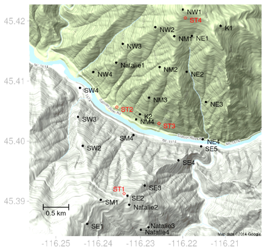
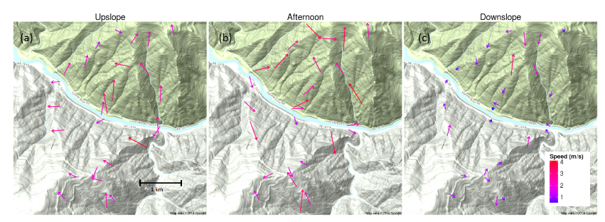
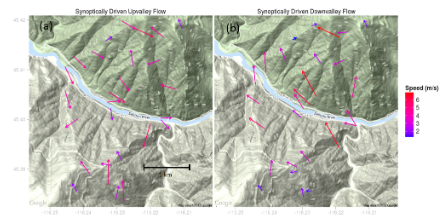

Salmon River Canyon
Site description
The site was a stretch of the Salmon River Canyon upstream of Riggins Idaho. The canyon follows a nearly east-west path within this extent. Prevailing winds in the region are from the west. The predominant vegetation is grass with some timber in the higher elevations on the northerly aspects. Instrumentation was deployed away from forested areas.
Setup

Sensor Layout at Salmon River Canyon.
Observations
Diurnal Flow Regimes

Average flow regimes for Salmon River Canyon during peroids of weak synoptic flow
Synoptically Driven Flow Regimes

Characteristic synoptically driven regime events
Conclusions
-
Surface winds in Salmon River Canyon were decoupled from large-scale flows except during periods of strong synoptic forcing that enhanced either upriver or downriver flows.
-
Wind speeds generally decreased with distance upslope during the upslope regime.
-
Wind speed generally increased with distance upslope at Salmon River Canyon
-
The highest speeds measured at SRC occurred during late morning hours and were from easterly flows presumably produced by surface pressure gradients induced by formation of a thermal trough over the Columbia Plateau to the northwest and high pressure to the east. The highest wind speeds during these pressure-driven easterly flow events were measured at the mid to high-elevation sensors.
-
These results have important implications for modeling near-surface winds in complex terrain. The fact that surface winds at both sites tended to be decoupled from large-scale flows under periods of weak synoptic forcing suggests that traditional operational weather model winds (i.e., with numerical grid resolutions of around 4 km or larger) are not likely to be good predictors of local winds in sub-grid scale complex terrain.
Note
All data are archived and available to the public. Surface observations for each site are available as SQLite databases. Data from sodars, radar profilers, sonic anemometers, weather stations, and radiosondes are available in their raw formats. Access to these data along with tools to query,process, and visualize the data is described at https://collab.firelab.org/software/projects/wind-obs/repository. Descriptions of the NOAA mesonet data and contact information regarding mesonet data are found at http://www.noaa.inel.gov/projects/INLMet/INLMet.htm